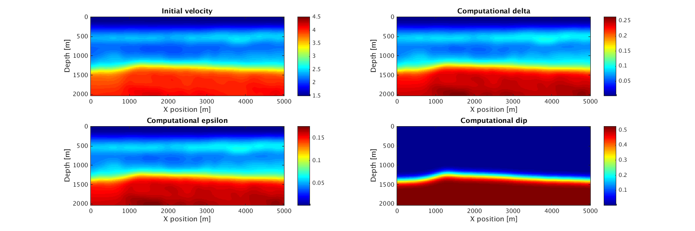
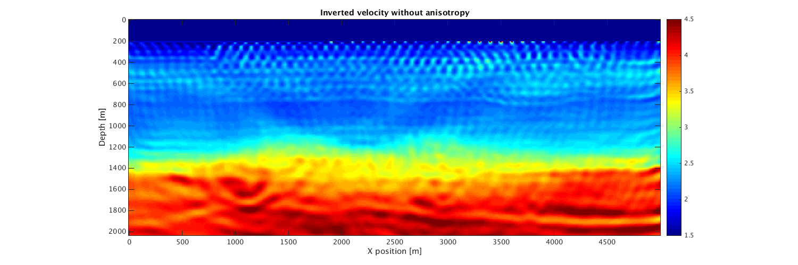
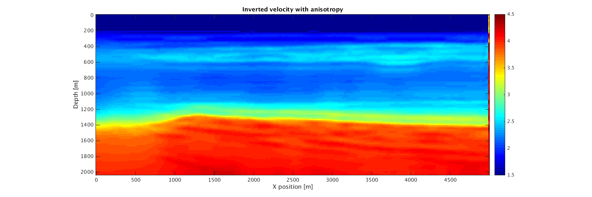

2D time-domain acoustic anisotropic and acoustic isotropic adjoint-state Full-waveform inversion
This is script is a basic example of time-domain full-waveform inversion on the 2D BG compass model We use gradient descent with line-search and we show the result for acoustic isotropic inversion and acoustic anisotropic inversion
Contents
- Results files
- read velocity [km/s], and anisotropy
- Display true models
- Define initial velocity model and geometry
- Acoustic anisotropic modeling
- Display initial models
- Acoustic isotropic FWI with gradient descent
- Acoustic anisotropic FWI with gradient descent
- PQN FWI via MinCon_PQN by M. Schmidt (UBC CS) with Box constraint
Results files
result_file_ani = '../Results/m_tti_final.mat'; m_update_ani = '../Results/m_tti_update.mat'; gradient_ani = '../Results/gradient_tti.mat'; params_ani = '../Results/params_tti.mat'; result_file_iso = '../Results/m_iso_final.mat'; m_update_iso = '../Results/m_iso_update.mat'; gradient_iso = '../Results/gradient_iso.mat'; params_iso = '../Results/params_iso.mat';
read velocity [km/s], and anisotropy
load ../data/epsilon.mat; load ../data/delta.mat; load ../data/theta.mat; load ../data/v0.mat; load ../data/v.mat;
Display true models
xx=0:10:5000; zz=0:10:2040; hfig=figure(1); set(hfig, 'position', [500 1200 1500 500]) subplot(2,2,1); imagesc(xx,zz,v,[1.5 4.5]);colormap(jet);colorbar;daspect([1 1 1]) xlabel('X position [m]'); ylabel('Depth [m]'); title('True velocity'); subplot(2,2,2); imagesc(xx,zz,delta);colormap(jet);colorbar;daspect([1 1 1]) xlabel('X position [m]'); ylabel('Depth [m]'); title('True delta'); subplot(2,2,3); imagesc(xx,zz,epsilon);colormap(jet);colorbar;daspect([1 1 1]) xlabel('X position [m]'); ylabel('Depth [m]'); title('True epsilon'); subplot(2,2,4); imagesc(xx,zz,theta);colormap(jet);colorbar;daspect([1 1 1]) xlabel('X position [m]'); ylabel('Depth [m]'); title('True dip');

Define initial velocity model and geometry
m=1./v.^2; m0=1./v0.^2; m0=reshape(m0,n); m0(1:20,:)=m(1:20,:); % Put the real water layer S = opKron(opSmooth(n(2),100),opSmooth(n(1),200)); %smoothing operator ani.delta = S*delta(:); %ones(prod(n),1)*0.3; % values for e.g. wills point shale ani.epsilon = S*epsilon(:); %ones(prod(n),1)*0.2; ani.theta = S*theta(:); %ones(prod(n),1)*pi/9; % Modeling parameters model.o=[o 0]; %Origins of the axes [m] model.n=[n 1]; %Number of grid points for each dimension (excluding boundaries) model.ddcompx=1; % Domain decomposition x direction model.ddcompy=1; % Domain decomposition y direction model.ddcompz=1; % Domain decomposition z direction model.d=[d 10]; model.f0=0.015; model.xsrc =0:100:5000; model.zsrc= 10*ones(size(model.xsrc)); %Source coordinates along z axis [m] model.ysrc=0*ones(size(model.xsrc)); model.xrec = (1:1:model.n(2))*model.d(2); model.zrec=10; %Receivers coordinates along z axis [m] model.yrec=0; %Receivers coordinates along z axis [m] model.T=2000; %Acquisition duration [ms] model.NyqT=0:4:model.T; % Shot record time axis [ms] model.freesurface=0; % Freesurface ( 0 : no freesurface, 1 : freesurface) model.space_order=4; % Space discretization order (2 or 4 only for now) model.gppwl=6; % grid points per wave length model.type='full'; % Acquisitionb type is 'marine' or 'full' % No reverse propagation of the forward wavefield to get missing time % steps(0) or do the reverse propagation(1) model.propag=0; % Saving checkpints in 'RAM' or on 'disk' model.save='RAM'; % Put the gradient to zero in the first 20 points in depth, you can also % give an matrix of the size of the model (after CFL projection) giving the % indexes of the physical location you don't want to update (usually waater layer or shallow part of it) model.water=20;
Acoustic anisotropic modeling
[mm,modelm,~,anim]=Setup_CFL(m,model,[],ani); q=sp_RickerWavelet(modelm.f0,1/modelm.f0,modelm.dt,modelm.T); % % dataT=Gen_data(mm,modelm,q,[],anim);
CFL conditions gives dt = 1.1985ms and d = 16 16 16 m Velocity interpolated on new grid
Display initial models
hfig=figure(2); set(hfig, 'position', [500 1200 1500 500]) subplot(2,2,1); imagesc(xx,zz,v0,[1.5 4.5]);colormap(jet);colorbar;daspect([1 1 1]) xlabel('X position [m]'); ylabel('Depth [m]'); title('Initial velocity'); subplot(2,2,2); imagesc(xx,zz,reshape(ani.delta,model.n));colormap(jet);colorbar;daspect([1 1 1]) xlabel('X position [m]'); ylabel('Depth [m]'); title('Computational delta'); subplot(2,2,3); imagesc(xx,zz,reshape(ani.epsilon,model.n));colormap(jet);colorbar;daspect([1 1 1]) xlabel('X position [m]'); ylabel('Depth [m]'); title('Computational epsilon'); subplot(2,2,4); imagesc(xx,zz,reshape(ani.theta,model.n));colormap(jet);colorbar;daspect([1 1 1]) xlabel('X position [m]'); ylabel('Depth [m]'); title('Computational dip');
Acoustic isotropic FWI with gradient descent
[mi,modeli,mii]=Setup_CFL(m0,model,m); modeli.water=find(sqrt(1./mii)<1.5); q=sp_RickerWavelet(modeli.f0,1/modeli.f0,modeli.dt,modeli.T); V_init=mi; % nGrad=5; % modeli.iter = nGrad; % misfit_iso = zeros(nGrad,1); % % % operators for saving snapshots % opSaveM = opSaveSnapshot(modeli.n(1)*modeli.n(2),m_update_iso); % opSaveGradient = opSaveSnapshot(modeli.n(1)*modeli.n(2),gradient_iso); % % fh=@(x)GS(x,modeli,q,dataT); % % for i=1:nGrad % fprintf('Iteration No. %d \n',i); % [f0,g0]=fh(V_init); % disp('f0 and g0 done starting line search'); % alpha=WolfeLS(fh,V_init,f0,g0,.5*min(V_init(:))/max(abs(g0(:)))); % g=alpha*g0; % V_init=V_init-g; % % V_init = reshape(V_init,modeli.n); % gSave = reshape(g,modeli.n); % V_init(V_init < 1/6^2) = 1/6^2; % V_init(V_init > 1/1.48^2) = 1/1.48^2; % opSaveM*V_init(:); % opSaveGradient*gSave(:); % misfit_iso(i) = f0; % V_init = vec(V_init); % end % V_init = reshape(V_init,modeli.n); % save(result_file_iso,'V_init','misfit_iso'); % save(params_iso,'modeli'); load(result_file_iso); load(params_iso); xx=0:modeli.d(2):5000; zz=0:modeli.d(1):2040; hfig=figure(3);set(hfig, 'position', [500 1200 1500 500]) imagesc(xx,zz,reshape(sqrt(1./V_init),modeli.n),[1.5 4.5]);colormap(jet);colorbar;daspect([1 1 1]) xlabel('X position [m]'); ylabel('Depth [m]'); title('Inverted velocity without anisotropy');
CFL conditions gives dt = 1.156ms and d = 9 9 9 m Velocity interpolated on new grid
Acoustic anisotropic FWI with gradient descent
[ma,modela,maa,ania]=Setup_CFL(m0,model,m,ani); modela.water=find(sqrt(1./maa)<1.5); q=sp_RickerWavelet(modela.f0,1/modela.f0,modela.dt,modela.T); V_init=ma; % nGrad=5; % modela.iter = nGrad; % misfit_ani = zeros(nGrad,1); % % % operators for saving snapshots % opSaveM = opSaveSnapshot(modela.n(1)*modela.n(2),m_update_ani); % opSaveGradient = opSaveSnapshot(modela.n(1)*modela.n(2),gradient_ani); % % fh=@(x)GS(x,modela,q,dataT,[],ania); % % for i=1:nGrad % fprintf('Iteration No. %d \n',i); % [f0,g0]=fh(V_init); % disp('f0 and g0 done starting line search'); % alpha=WolfeLS(fh,V_init,f0,g0,.5*min(V_init(:))/max(abs(g0(:)))); % g=alpha*g0; % V_init=V_init-g; % % V_init = reshape(V_init,modela.n); % gSave = reshape(g,modela.n); % V_init(V_init < 1/6^2) = 1/6^2; % V_init(V_init > 1/1.48^2) = 1/1.48^2; % opSaveM*V_init(:); % opSaveGradient*gSave(:); % misfit_ani(i) = f0; % V_init = vec(V_init); % end % V_init = reshape(V_init,modela.n); % save(result_file_ani,'V_init','misfit_ani'); % save(params_ani,'modela'); load(result_file_ani); load(params_ani); xx=0:modela.d(2):5000; zz=0:modela.d(1):2040; hfig=figure(4);set(hfig, 'position', [500 1200 1500 500]) imagesc(xx,zz,reshape(sqrt(1./V_init),modela.n),[1.5 4.5]);colormap(jet);colorbar;daspect([1 1 1]) xlabel('X position [m]'); ylabel('Depth [m]'); title('Inverted velocity with anisotropy');
CFL conditions gives dt = 1.3083ms and d = 16 16 16 m Velocity interpolated on new grid
PQN FWI via MinCon_PQN by M. Schmidt (UBC CS) with Box constraint
http://www.cs.ubc.ca/~schmidtm/Software/
You need to modify MinCon_PQN as the amplitude of the gradient are to big to work like it is. For more info to modify it
mloubout@eos.ubc.ca
Box constraint
LB=1/(5.5^2)*ones(prod(model.n),1); UB=1/(1.45^2)*ones(prod(model.n),1); Proj=@(x)boundProject(x,LB,UB);
Gradient and objective
fh=@(x)GS(x,modela,q,dataT,[],ani);
Solve :
options.maxIter=4; options.adjustStep=0; options.verbose=3; options.corrections=5;
[m_init,f,hst,funEvals] = minConf_PQN(fh,m_init,Proj,options);